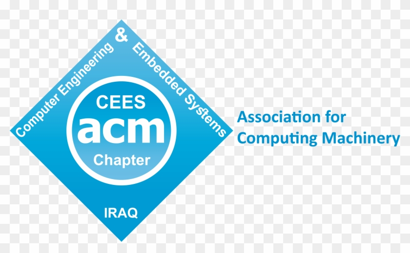
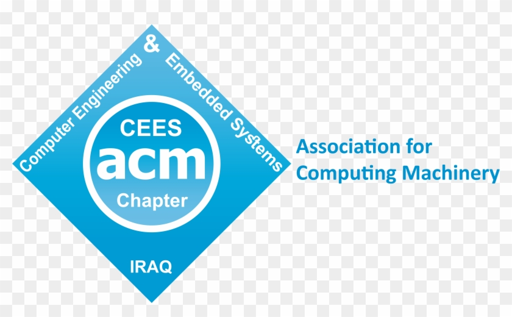

John's Portfolio
Software Engineering Major from Southeast Idaho
About Me

Projects & Collaboration
Proficiencies

Software Engineering Major from Southeast Idaho
About Me
Projects & Collaboration
Proficiencies
About Me
I am currently a Junior at Brigham Young University-Idaho. My interest in software started at a young age after reading the science fiction anthology "Machines That Think." This book made me realize that technology can be a Pandora's box. Despite its shortcomings, I am interested in software because it allow us greater optionality.
The areas that interest me in computer science are machine learning, embedded systems, and security. I am interested in working in the resource extraction industry and especially in future extraterrestrial operations.
Projects & Collaboration
Interested in collaborating? Leave you information below
Proficiencies
The majority of my experience is in C++ and I am in the process of learning HTML, CSS, and JavaScript.